Comments in WCM
Starting from CF213, the product contains a new solution that allows users to leave comments for Web Content Manager (WCM). These comments can be used in Intranet scenarios or in controlled settings allowing external comments.
WCM Comments as Custom Plugin Component
Starting from CF213, WCM Comments can be enabled as Custom Plugin Component for a WCM content. WCM Comments can be rendered on page and on the Web Content Viewer Portlet.
This section describes how to enable, configure, and disable the WCM commenting solution as as Custom Plugin Component for a WCM content.
Overview
WCM Comments is a feature that allows customers to enhance their presentation template by adding in a plugin for commenting. The actual comments are also stored in WCM and can be managed like regular content. You can choose which library is being used for storing the comments.
Note that this solution is not related to the existing comments for blogs/wikis ability.
Enabling the comments plugin in WAS Console
To make the comments plugin visible in the plugin component tag which should be added to presentation template, you must first add the configuration in WAS Console. In WAS Console, go to Resources > Resources Environment Providers > WCM_WCMConfigService > Custom properties > New Property. Enter the following details:
- Name: enable.comment.plugin
- Value: true
- Type: String
Important
After adding the configuration, a JVM restart is required.
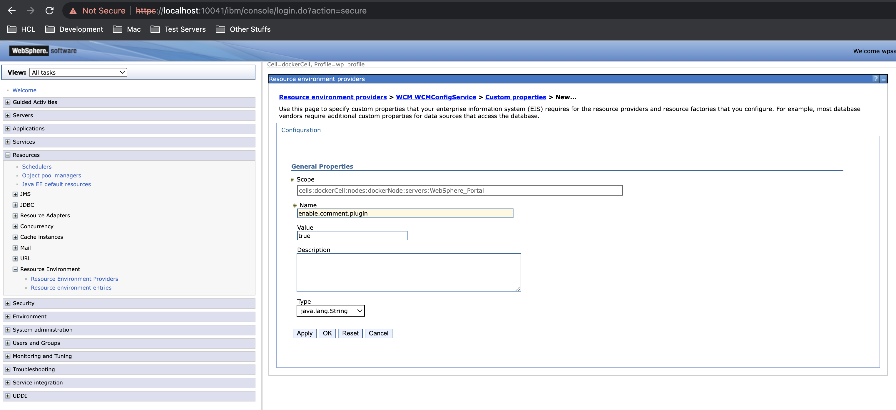
Adding Admin User Group Configuration in WAS Console for User Access Control (Optional)
By default, if the configuration for the admin user group is not present in the console, only users with manager-level access can delete comments.
For security purposes, if you need to limit the delete comments option to a specific user group, you must add the following configuration. In WAS Console, go to Resources > Resources Environment Providers > WCM_WCMConfigService > Custom properties > New Property. Enter the details below:
- Name: comments.admin.group
- Value: cn={user-group},o=defaultWIMFileBasedRealm
- Type: String
user-group can be any user group such as managers, admins, editors, etc.
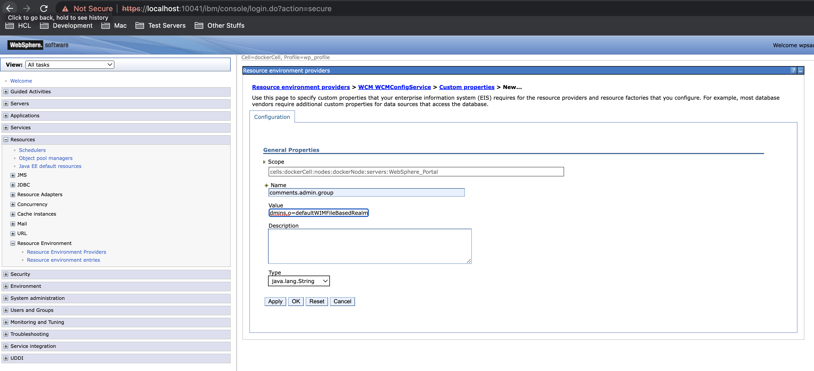
Adding Custom Plugin
-
To use the custom plugin, add it to Libraries > Web Content > Presentation Templates > Article Presentation.
-
In the Presentation Template Options, click the Insert Tag button to add the custom plugin.
-
In the Insert Tag window, select the following values:
- In Select a tag type field, select Plugin Component.
- In Select a plugin type field, select Content.
- In Select plugin to reference field, select NewCommentRenderPlugin. 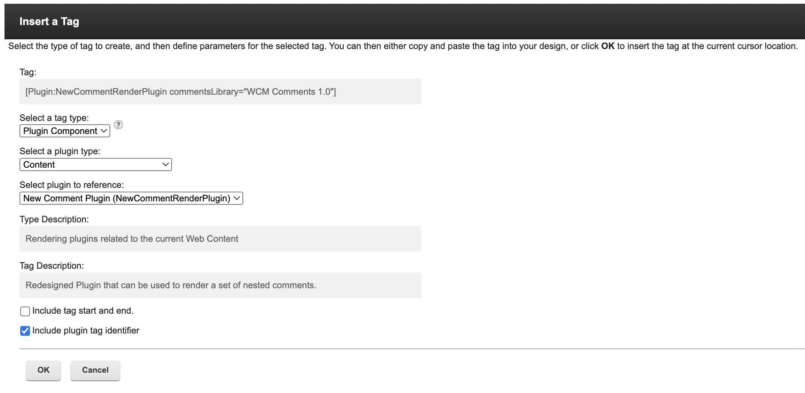
-
Click OK after selecting all the values.
-
The plugin tag for custom plugin is added on the Article Presentation body. Click Save and Close to save changes.
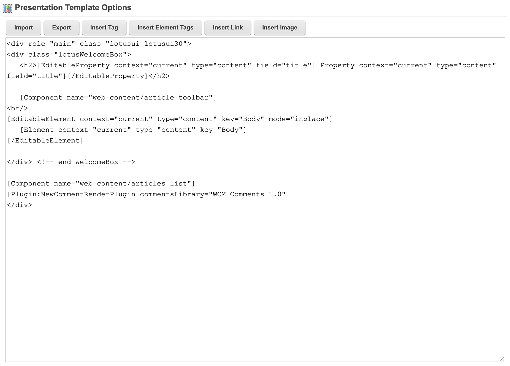
Note
You can specify the library you want to use for storing comments in the commentsLibrary field.
-
Set up and view the Comments UI on the page.
- Click Create Page and add the content created in Step 5.
- Using the Web Content Viewer portlet, select the content to render.
- Click OK.
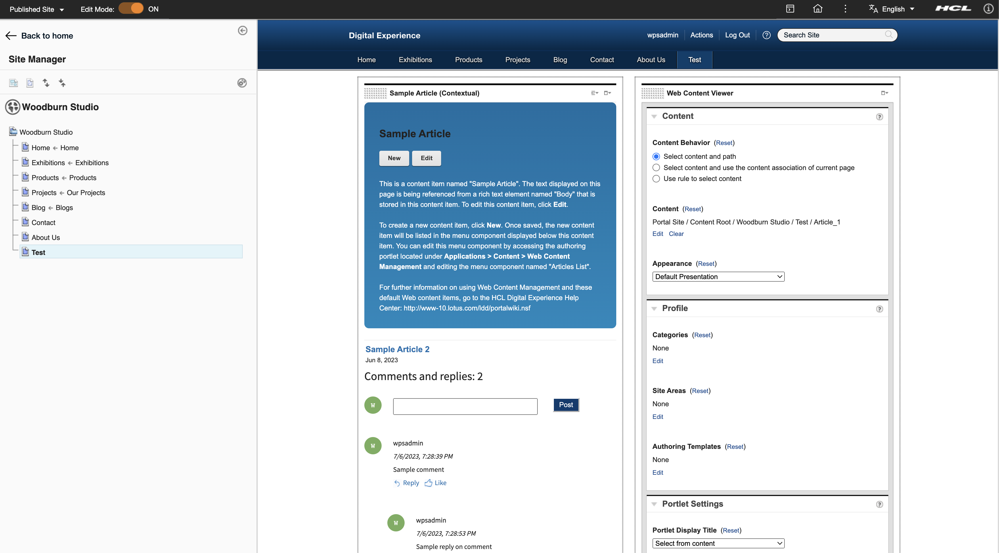
After setting up the comments UI on the page, you can now add, reply, like/unlike, and delete comments. You can also view the total comments count on the content item. 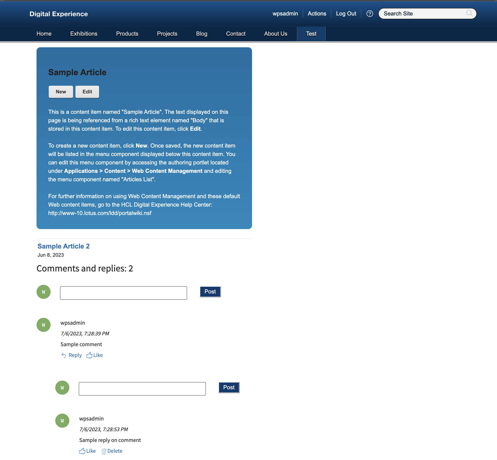
Rendering WCM comments in external components
Starting from CF214, WCM comments can be rendered in external components such as Page Components and Rich Text, Script applications or Custom Portlet. For these scenarios, enabling and configuring Custom Plugin Component for WCM comments as described in the WCM Comments as Custom Plugin Component are not required.
This section provides an overview of the page component shipped as part of CF214. It also describes how to configure WCM comments in external components such as Rich Text Editor, Script Application, and Custom Portlet.
Custom Page Component for WCM Comments
Starting from CF214, the default WCM Comments library is shipped with a new custom page component and an additional authoring template that uses a new presentation template. This presentation template is for rendering the WCM comments HTML markup component inside the new page component.
This section provides an overview of the components related to the newly shipped page component. You can see the different components in the following images.
Authoring Template of Page Component
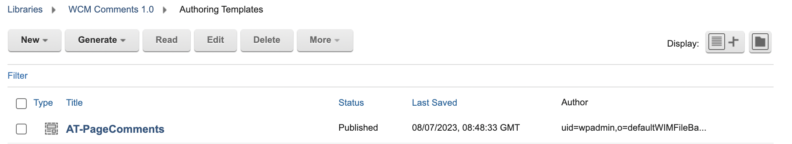
Presentation Template of Page Component
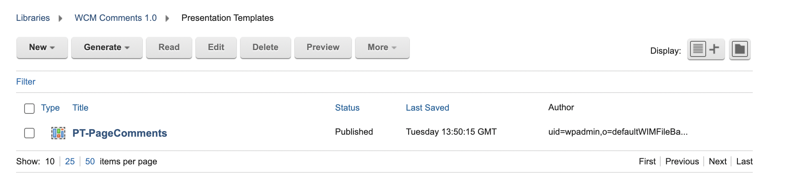
WCM comments HTML markup component
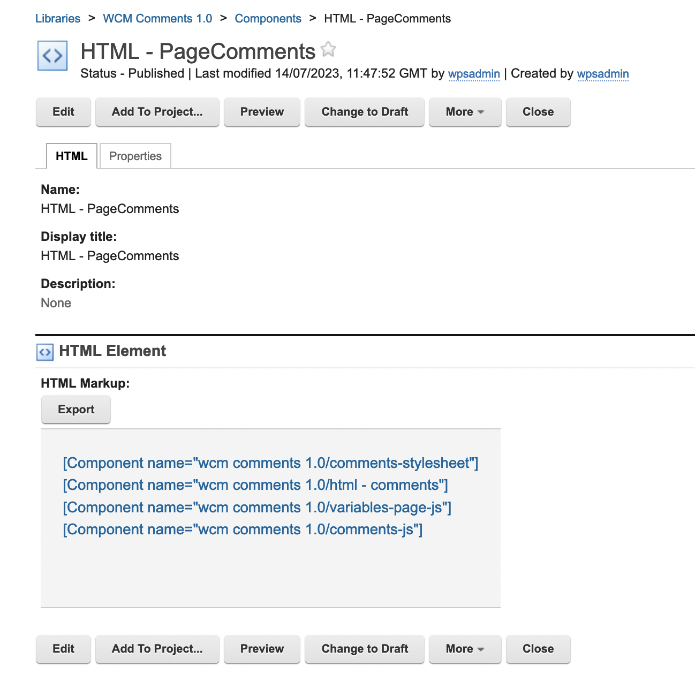
Newly added Custom Page Component
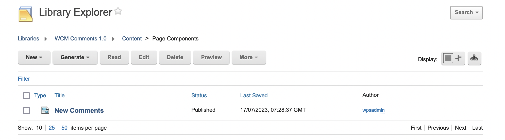
Page Component accessible in Site Manager
Use the Site Manager on Edit mode. Go to Applications > Page Components. Only administrators can view the new custom page component.
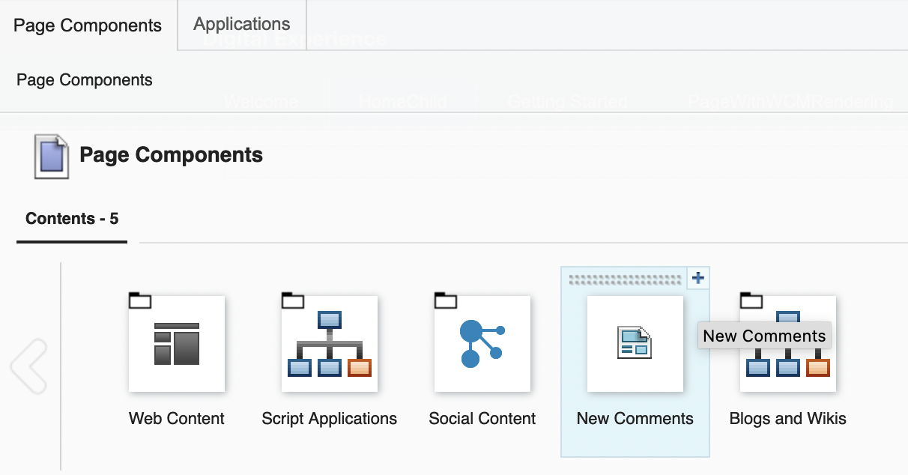
Showing and Hiding Comments Page Component in Site Manager
To show the Comments page component in Site Manager, go to the Profile section. In the Keywords property, enter ibm.portal.toolbar.NewContent. Removing the keyword hides the Comments page component in the Site Manager.
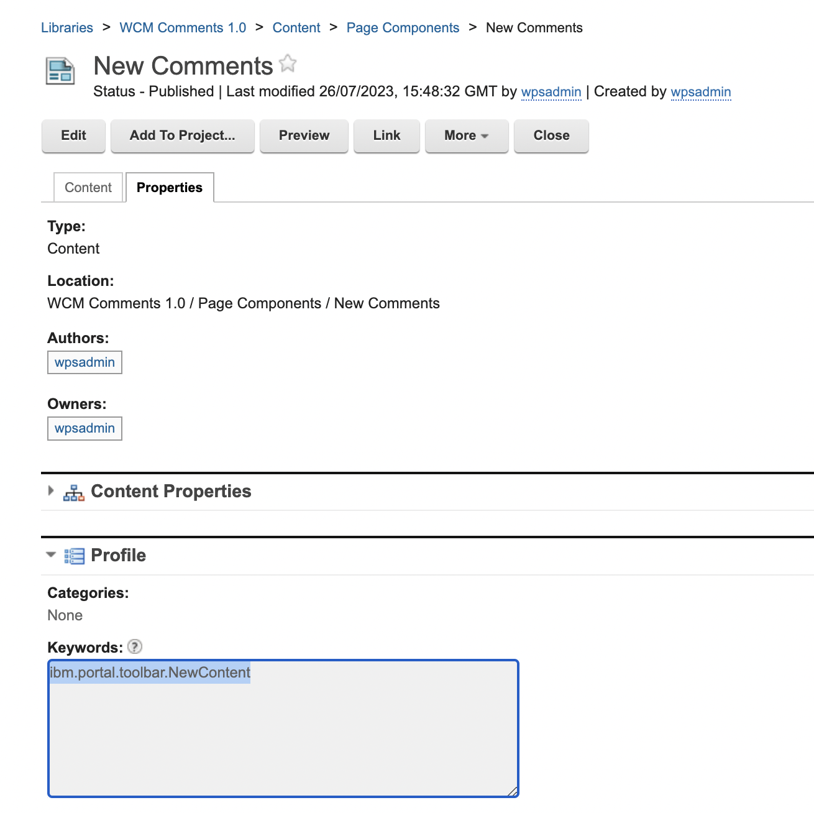
Rendering and configuring new page component to have WCM comments HTML markup component on the page
- Open the Site Manager in Edit mode.
- Add the newly shipped page component to any page where the comments functionality needs to be enabled. After adding the page component to the page, the WCM comments UI should be visible.
- In the Library Name field, specify the library name to be used for storing the comments. 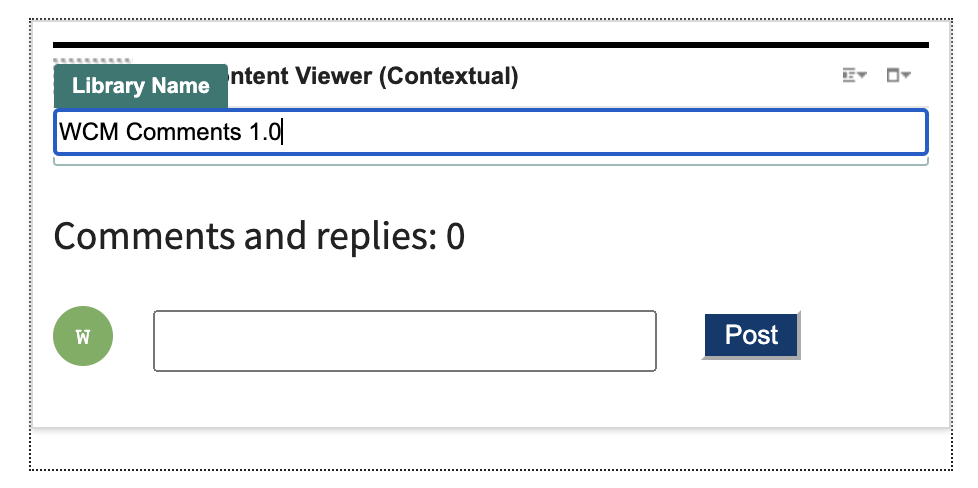
- In the Content uuid field, specify the content UUID to which comments need to be added. 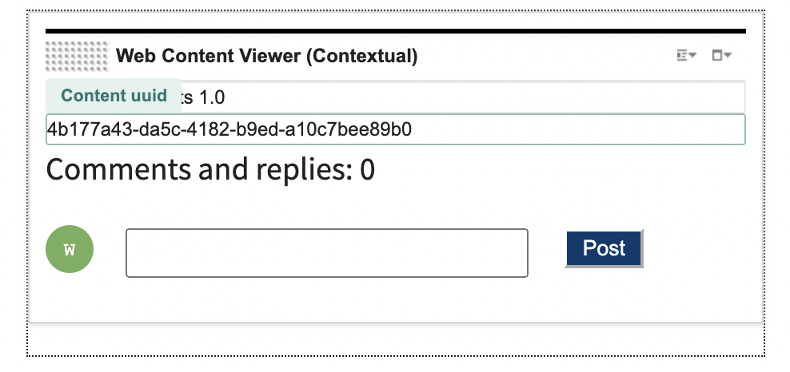
After setting up the page component with comments UI on the page, actions such as add, reply, like/unlike, and delete comments can be done. The total comments count on the content item can also be viewed.
Rendering and configuring WCM comments HTML markup component in Rich Text Editor
-
Go to the content to which the WCM comments feature needs to be available. Edit the content. 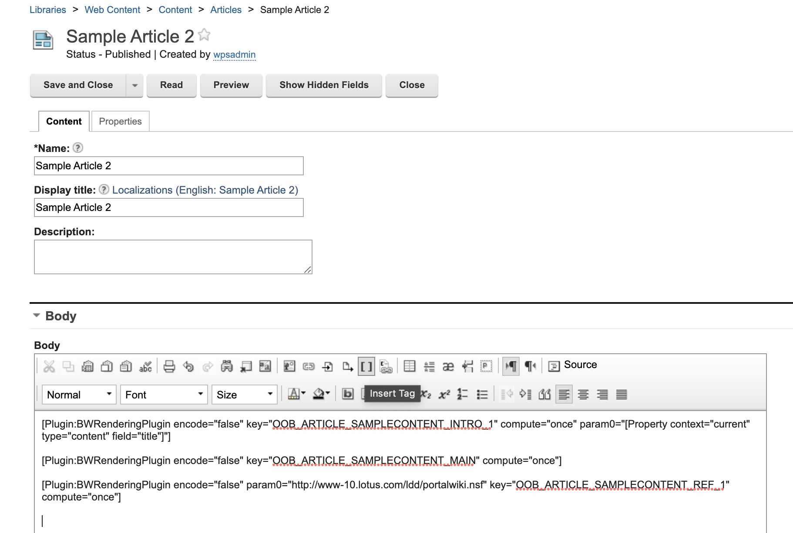
-
In the Rich Text Editor, click the Insert Tag button to add the WCM tag.
-
In the Insert a Tag window, select the following values:
- In Select a tag type field, select Content.
- In Select item context field, select Selected.
- In Select the content item to reference field, select New Comments content under WCM Comments 1.0/Page Component.
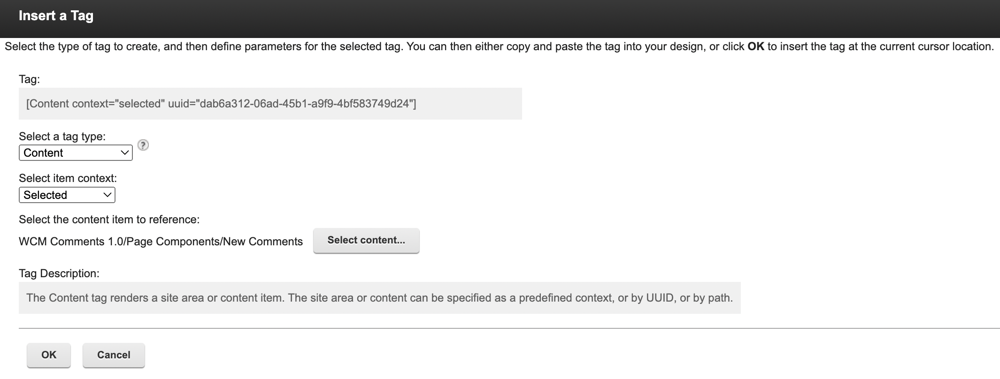
-
Click OK after selecting all the values. 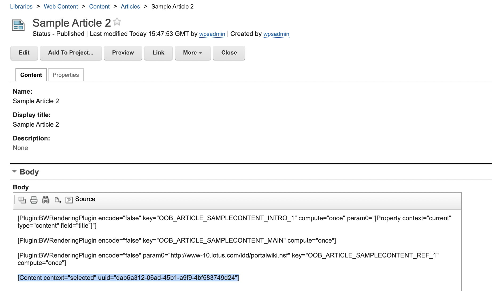
-
Currently, there is a CSS alignment issue while rendering comments inside Rich Text. To avoid it, refer to the following steps:
- Click the Source button in the Rich Text Editor.
- Remove from the last line of the body.
- Enclose the Content tag you added as a part of Step 4 inside the div blocks exactly as how it appears in the following example:
</div><div>[Content context="selected" uuid="dab6a312-06ad-45b1-a9f9-4bf583749d24"]</div><div>. 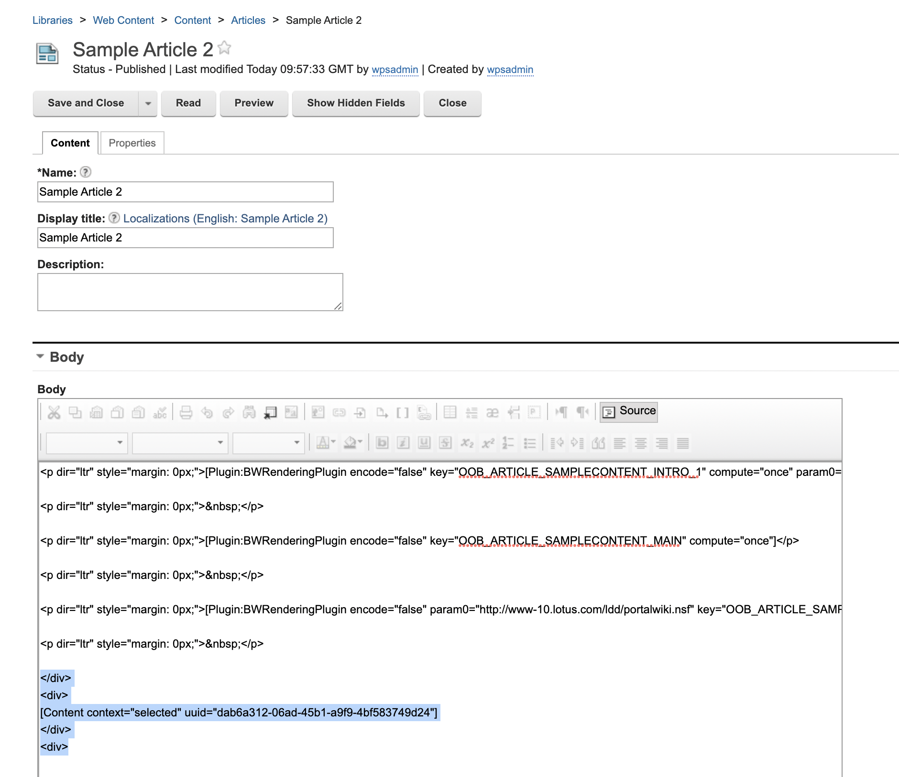
-
Save the content to enable the commenting feature for that particular content. After setting up the comments UI on the rich text editor, this content can be added to any page.
-
After the WCM Comments UI is rendered for the content on the page, specify the library name to be used for storing the comments and the current content UUID. Refer to Rendering and configuring new page component to have WCM comments HTML markup component on the page for instructions.
After configuring the WCM comments HTML markup component in the Rich Text Editor, actions such as add, reply, like/unlike, and delete comments can be done. The total comments count on the content item can also be viewed.
Configuring WCM comments in Script Application
- Open the Site Manager on Edit mode. Go to Applications > Page Components. Click the + button to add it to the page. 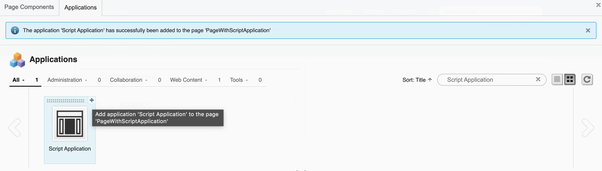
-
Click Edit > Actions > Insert WCM Tag. The Insert a Tag window appears. 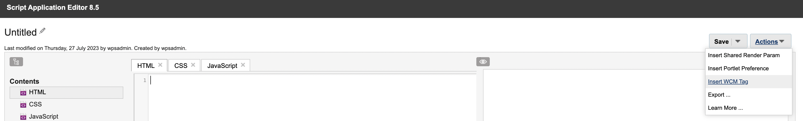
-
In the Insert a Tag window, select the following values:
- In Select a tag type field, select Content.
- In Select item context field, select Selected.
- In Select the content item to reference field, select New Comments content under WCM Comments 1.0/Page Component.
- Click OK after selecting all the values.
- Click Save. 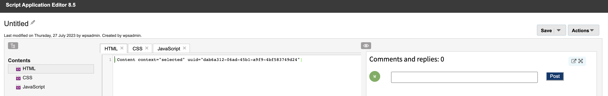
- Close the Script Application Editor window.
- After the WCM Comments UI is rendered for the content on the page, specify the library name to be used for storing the comments and the current content UUID. Refer to Rendering and configuring new page component to have WCM comments HTML markup component on the page for instructions.
After configuring WCM comments in a Script Application, actions such as add, reply, like/unlike, and delete comments can be done. The total comments count on the content item can also be viewed.
Configuring WCM comments in a custom DX Portlet
- Create the custom DX Portlet. For more information, see Creating Custom DX Portlet.
- Go to the custom DX Portlet you created.
- Go to the folder that contains the view files inside the created custom DX Portlet. In this example, navigate to:
src/main/webapp/_JSPDemoPortlet/jsp/html/. 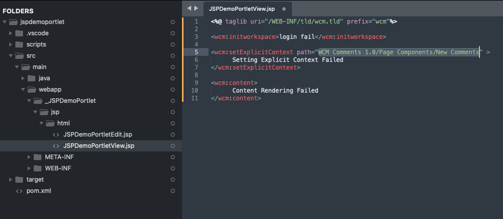 -
Add the following piece of code in any of the view files where the Comments feature should be enabled.
<%@ taglib uri="/WEB-INF/tld/wcm.tld" prefix="wcm"%> <wcm:initworkspace>login fail</wcm:initworkspace> <wcm:setExplicitContext path="WCM Comments 1.0/Page Components/New Comments" > Setting Explicit Context Failed </wcm:setExplicitContext> <wcm:content> Content Rendering Failed </wcm:content>For more information, see Web Content Manager JSP tags.
-
Copy the
/wcm.ear/wcm-inplaceEdit.war/WEB-INF/tld/wcm.tldfile from the DX core container into the path/WEB-INF/tld. - Build the WAR file. See Build the WAR file for instructions.
- Deploy the portlet. For instructions, refer to Deploy the portlet.
- Add the custom DX Portlet to the page. For more information, see Testing Custom DX Portlet.
- After the WCM Comments UI is rendered for the custom DX Portlet, specify the library name to be used for storing the comments in and the current content UUID. Refer to Rendering and configuring new page component to have WCM comments HTML markup component on the page for instructions.
After configuring WCM comments in a custom DX Portlet, actions such as add, reply, like/unlike, and delete comments can be done. The total comments count on the content item can also be viewed.
Configuring WCM comments in a theme
-
Create a new Site Area inside a WCM content library where you want to store a copy of the comments page component with the pre-populated library name and content UUID.
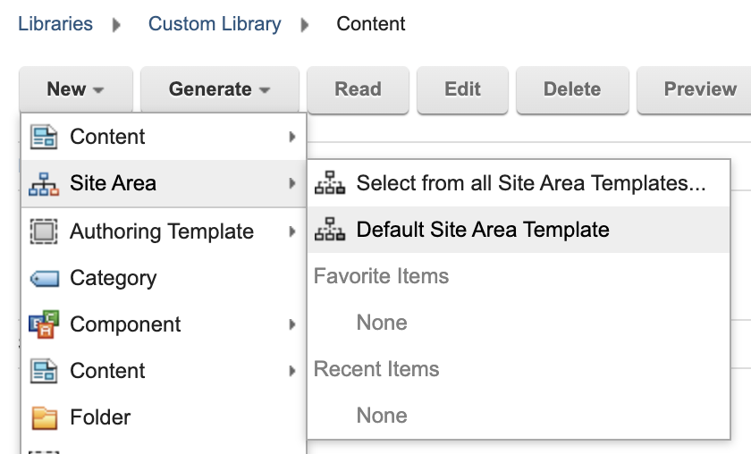
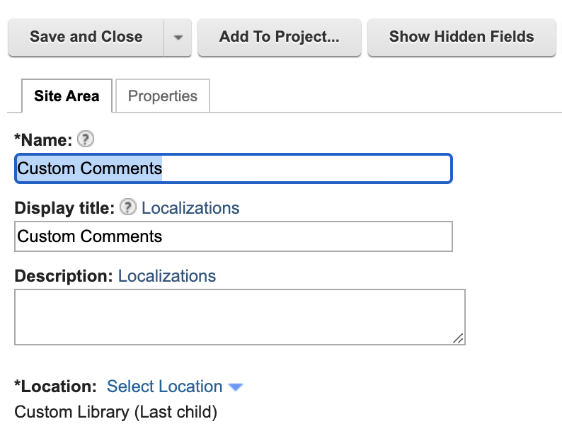
-
In the created site area, create a new copy of a page component which is created in Custom Page Component for WCM Comments.
-
In the Properties tab, copy the content UUID for which comments should be rendered. 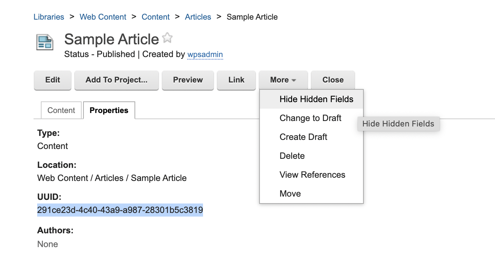
-
Edit the page component and enter the content UUID. 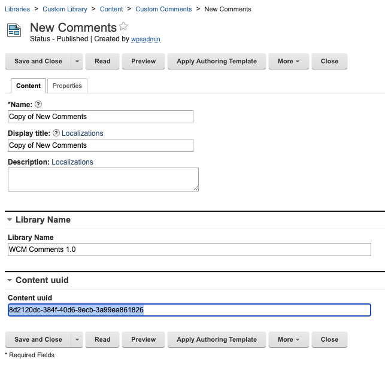
-
Save the page component.
-
Add the highlighted code snippets in the following screenshot to any of the view files of a theme (for example, default85) where the comments feature should be enabled. In this example, navigate to
/opt/HCL/PortalServer/theme/wp.theme.themes/default85/installedApps/DefaultTheme85.ear/DefaultTheme85.war/themes/html/dynamicSpots/and open thefooter.jspview file. 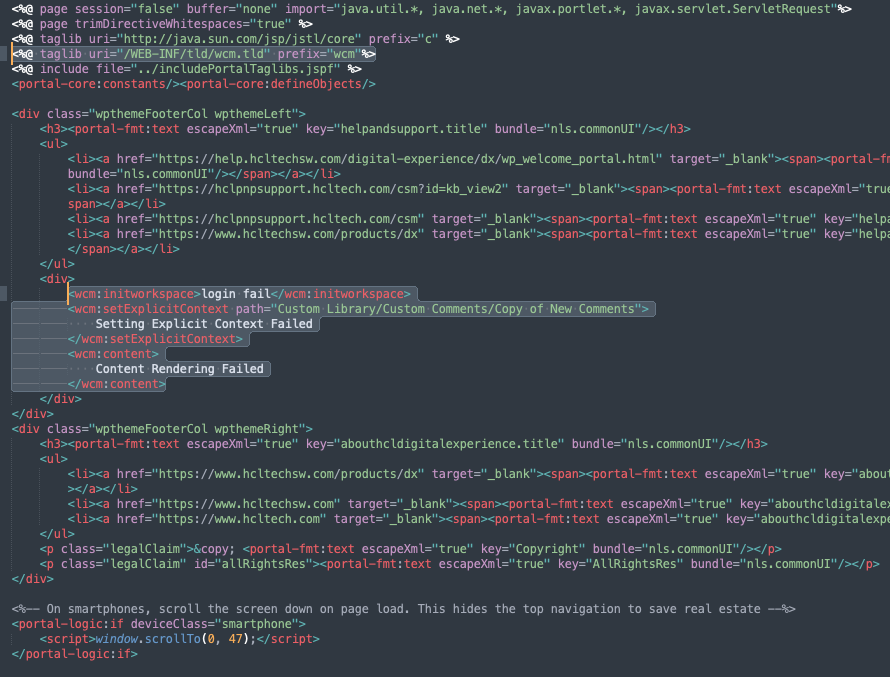 -
Add the following code snippet in the
footer.jspview file to enable the comments for the new page component with pre-populated content UUID.For more information, see Web Content Manager JSP tags.<%@ taglib uri="/WEB-INF/tld/wcm.tld" prefix="wcm"%> <wcm:initworkspace>login fail</wcm:initworkspace> <wcm:setExplicitContext path="Custom Library/Custom Comments/Copy of New Comments" > Setting Explicit Context Failed </wcm:setExplicitContext> <wcm:content> Content Rendering Failed </wcm:content> -
Copy the
/wcm.ear/wcm-inplaceEdit.war/WEB-INF/tld/wcm.tldfile from the DX core container into the TLD path of the theme to update. In this example, copy the TLD file to/opt/HCL/PortalServer/theme/wp.theme.themes/default85/installedApps/DefaultTheme85.ear/DefaultTheme85.war/WEB-INF/tld.
After configuring WCM comments in a theme, actions such as add, reply, like/unlike, and delete comments can be done. The total comments count on the content item can also be viewed. In the following example, WCM comments is configured in footer.jsp:
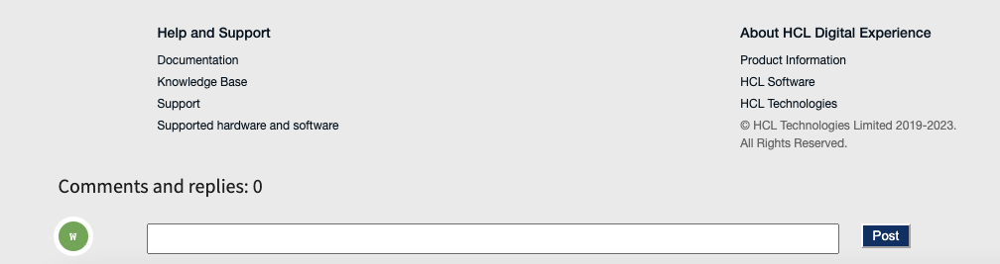
Access Roles and Permissions for WCM Comments
Only authorized users can view, edit, and delete the comments in the library where the comments are stored. It is required to have at least a View access to the WCM content library. For more information, see Managing users and groups.
The actions available for a user depend on their role:
- The User role or higher is required to see the comments.
- The Editor role or higher is required to create comments.
- The Manager role or higher is required to delete comments. In addition to the Manager role, you can configure a specific group solely for deleting comments.
Limitations
- Nested replies to comments are not yet supported.
- Posting and replying are limited to 500 characters.
- Rendering Comments outside the WCM rendering process (for example, from REST or a custom Servlet or JSP via the java WCM API) is not yet supported.
- HTML tags are not rendered in the comments. If HTML tags are present, the system skips HTML tags that are added in a comment.
Update global "Article" presentation template
If you want to perform a replacement of the OOB components that are shipped, see Adding the sample web content libraries in the authoring portlet.
CSRF protection for adding and deleting comments
Starting CF217, you can enable Cross-Site Request Forgery (CSRF) tokens to be utilized when creating or deleting a comment to prevent possible CSRF attacks. The feature is disabled by default and can be enabled through the WAS Console. Note that a request without a valid CSRF token will fail.
To enable CSRF tokens, go to the WAS Console and navigate to to Resources > Resources Environment Providers > WCM_WCMConfigService > Custom properties > New Property. Enter the following details:
- Name: wcm.csrf.comments.enabled
- Value: true
- Type: String
Important
After adding the configuration, a JVM restart is required.
Cleaning up orphaned comments data stored in the library
Starting from CF214, a new API is available for soft deleting all the comments that are no longer mapped to content (for example, if the content was deleted). When you soft delete, it marks a comment as no longer active without deleting it from the database.
In the libraries query parameter, pass all the library names containing the orphaned comments data.
The API finds all comments based on the authoring template and site area Comments of each of the defined libraries and soft deletes them.
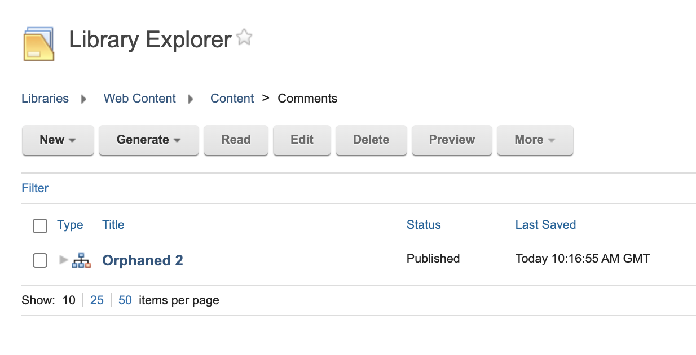
Sample request:
{{host}}/{{WpsContextRoot}}/mycontenthandler/wcmrest/deleteComments?libraries=Web Content&libraries=Demo Library
Sample response body:
{
"deletedCommentsStatus": {
"deletedCommentsList": [
"3346bd13-dfef-456c-bb94-ff4f829f626e",
"e04e2e4f-2ec2-4d7a-b22d-e502eb1a80bc"
]
}
}
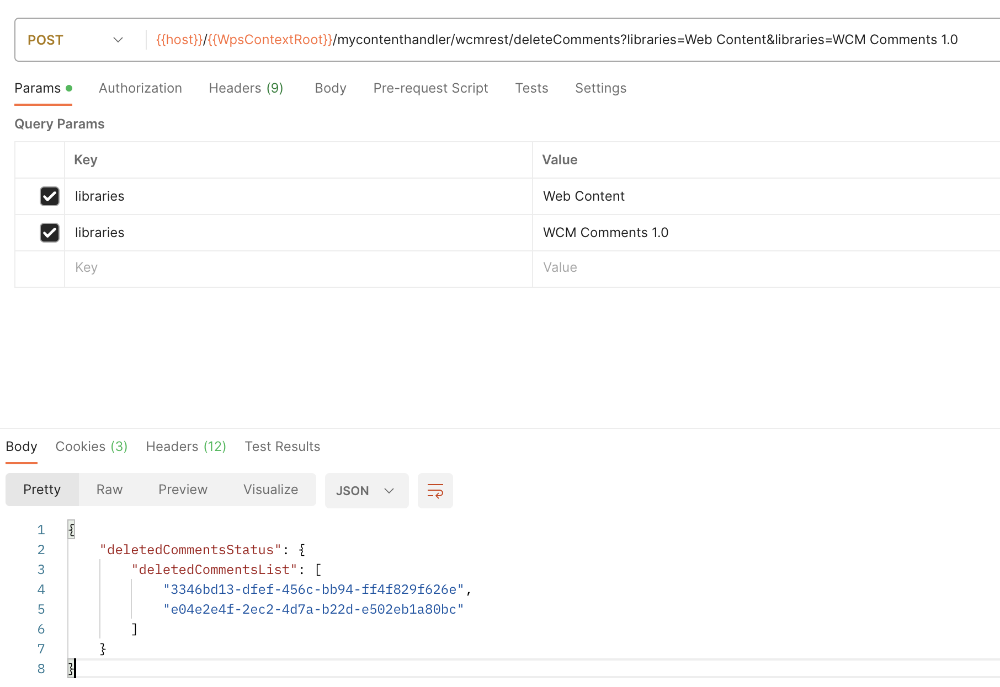
For purging deleted comments, refer to How to use REST with Web Content Manager to Purge Deleted Content Items.